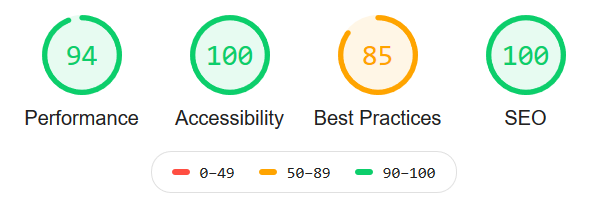

- Beaucoup de choses simples à mettre en œuvre
- Le green IT, l'accessibilité, le SEO et la performance vont souvent de pair !
- Respecter les recommandations W3C.
Toujours avoir en tête
- Green IT
- Accessibilité
- Référencement
- Performance
- Sécurité
- Obligations légales
Utilisation du plugin Lighthouse
Support de la présentation
https://hboisgontier.github.io/afupDay2020/